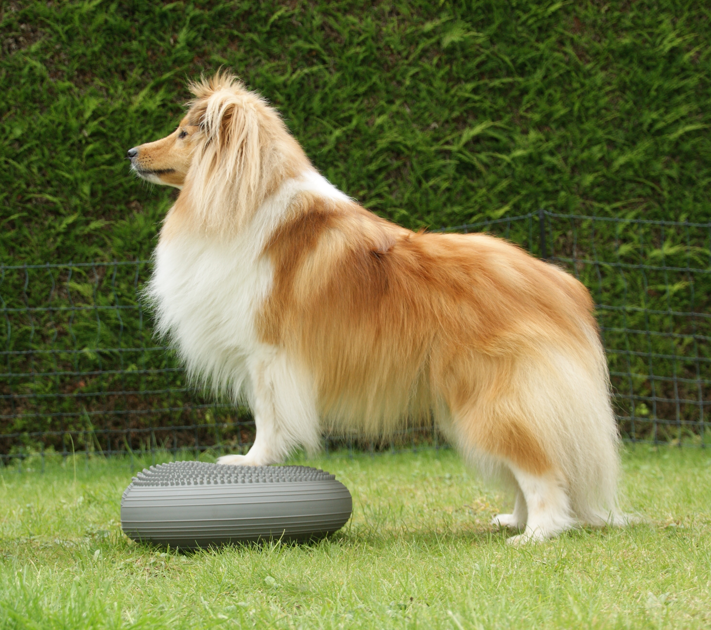

Sterk, gezond en gelukkig
Gerichte oefeningen die kracht, mobiliteit en balans opbouwen bij jouw hond, met aandacht voor elk individueel niveau.
Conditionering is belangrijk voor alle honden, maar vooral voor onze hondenatleten. Door middel van specifieke oefeningen kunnen we zorgen voor verbetering van:
wat de prestaties van onze hond in het algemeen verbetert en het risico op blessures vermindert. Conditionering verhoogt ook het vermogen van onze hond om zijn spieren te belasten. Dit is belangrijk omdat blessures optreden wanneer spieren overmatig worden verlengd en uitgerekt die niet voorbereid zijn op een dergelijke belasting.
Een andere factor bij blessures is vermoeidheid in de spieren, waardoor onze honden hun vermogen om hun positie te behouden verliezen of struikelen en vallen. Hoewel lichaamsbeweging zoals lange wandelingen of hardlopen in de achtertuin goed is voor het behoud van grote spiergroepen, worden de diepere spieren die worden geactiveerd wanneer onze hond zijn evenwicht verliest of uitglijdt vaak verwaarloosd en zijn het vaak de gebieden waar we meer blessures zien.
Conditioneringsoefeningen hebben niet alleen fysieke voordelen voor uw hond, maar ook mentale! Ze zijn een geweldige manier om de band die je met je hond hebt te versterken - ze vinden het heerlijk om met je te spelen en te werken.

Bouwt lichaamsbewustzijn en proprioceptie op, de basis van coördinatie en blessurepreventie. Stap voor stap van een onbeschreven blad naar een zelfverzekerde, lichaamsbewuste hond.
Een progressie van beginners- tot expertniveau, met kracht, stabiliteit, mobiliteit en proprioceptieve uitdagingen die de eisen van hoge-impactsporten nabootsen.
Voor honden die baat hebben bij betere algemene fitheid. Kracht, stabiliteit, mobiliteit en proprioceptie, met aandacht voor verrijking en een sterkere band.
Versterkt een redelijk bewegingsbereik en verbetert mobiliteit en lichaamsbewustzijn, met oefeningen die rekening houden met druk en impact.
Boek een kennismakingssessie en ontdek wat training kan betekenen voor jullie samen.
Contacteer mij